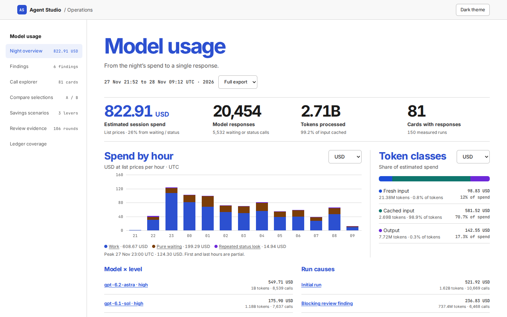
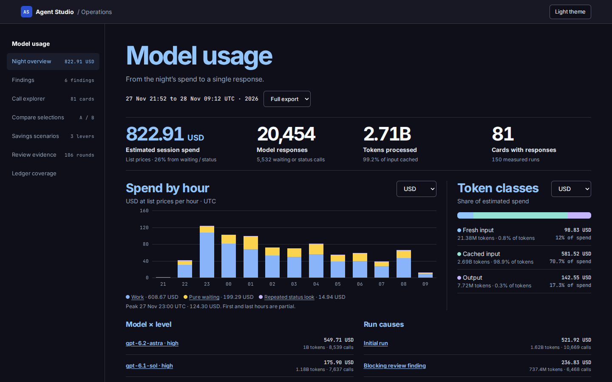
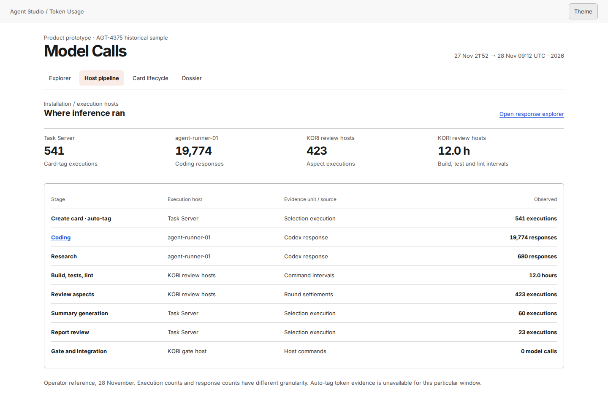
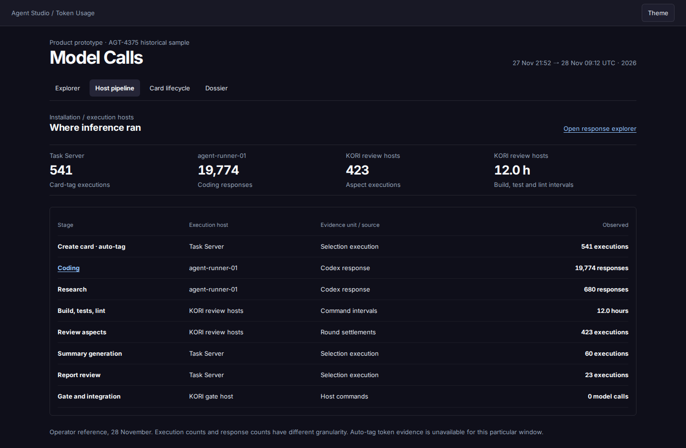
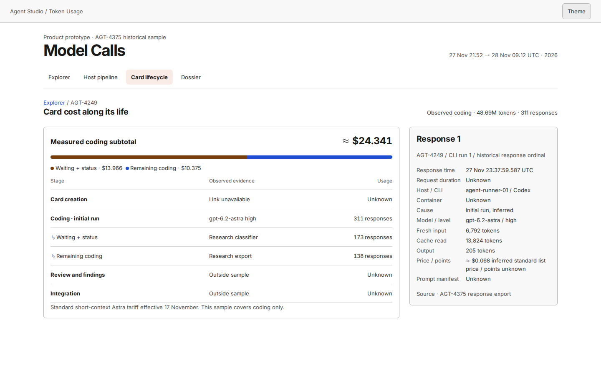
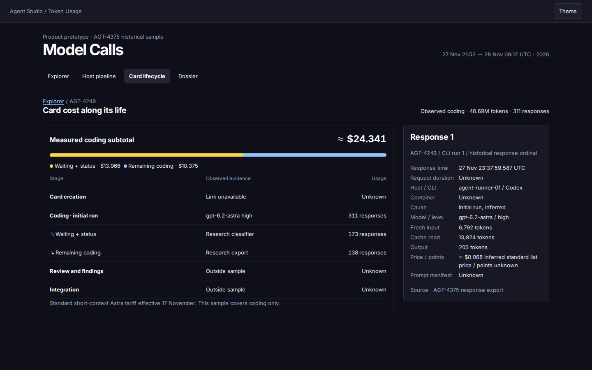

Every observed model response gets a traceable cost record. The owner can see what a card cost from creation to integration, which host and step incurred the cost, and which work drove it.
Entscheidungsvorlage
Die Modellkosten sollen vom Anlegen einer Karte bis zu ihrer Integration sichtbar sein. Die 30-Tage-Abrechnung nennt 41,2 Mrd. Tokens, 11.915 USD zu Listenpreisen und 1.196 Karten. 358 Läufe haben keinen Preis. Allein das automatische Verschlagworten verursachte rund 224 USD. In der Messnacht haben 5.516 Coding-Aufrufe nur auf laufende Arbeit gewartet oder ihren Status geprüft. Das waren 729 Mio. Tokens. Welcher Befund die nächste Runde ausgelöst hat, lässt sich heute nur aus mehreren Spuren rekonstruieren.
Empfehlung. Jeder Host puffert die erfassten Antworten und liefert sie an den Task Server. Dort speichert eine eigene SQLite-Datei die Buchungen mit Karte, Host, Schritt, Anlass und Preisgrundlage. Damit reicht für eine Einzelinstallation der vorhandene Stack. Ein zweiter aktiver Task Server wäre der Anlass, auf PostgreSQL umzusteigen. Ein verteilter Key-Value-Store würde erst bei einem eigenständigen Bedarf an verteilter Aufnahme oder Koordination geprüft.
Produkt. Unter Token Usage gibt es einen Explorer mit Filtern und Vergleichsansicht. Von der Wochenzahl geht es über Host, Modell oder Anlass bis zur Antwort. Zwei feste Ansichten zeigen die Pipeline nach Hosts und den Kostenverlauf einer Karte. Das Magazin liefert Tages- und Wochenberichte mit den teuersten Karten und belegten Auffälligkeiten. Szenarien zeigen, was bei unveränderter Folgearbeit rechnerisch entfallen wäre.
Standard. 180 Tage Einzelaufrufe, dauerhafte verdichtete Summen, Prompt-Referenzen ohne Prompt-Text. Listenpreis und gemeldete Abo-Punkte stehen nebeneinander. Fehlende Preise, Punkte und Zuordnungen bleiben sichtbar. Empfehlungen gelten für Umsetzungskarten, soweit keine abweichende Entscheidung vorliegt. Die erste Karte macht die Coding-Nacht vom 27. auf den 28. November im Produkt abfragbar.
Zuordnung und Betrieb. Eine Wiederholung wird als neuer Aufruf erfasst. Dieselbe Meldung kann gefahrlos erneut eintreffen. Wenn mehrere Befunde gemeinsam eine Runde ausgelöst haben, erscheint sie einmal in einer gemeinsamen Gruppe. Ein abgetrennter Host liefert seine Buchungen nach. Bei fehlender Abdeckung nennt der Bericht Zeitraum und Host.
Existing product. The pinned project Token Usage panel displays project token totals and a chart grouped by pipeline step kind.Light and dark: repository capture refresh, Demo App pinned fixture, commit 1749e56289, Playwright scene 05. Capture spec · Runbook
30-day production figures supplied on 28 November
41.2 billion tokens, USD 11,915 at list prices, 1,196 cards, and 358 unpriced runs with AmbiguousPromptSize on gpt-6.1-sol. Auto-tag contributed 129.9 million tokens and USD 223.52 in that window. The before-noon report shows 563 auto-tag calls and USD 7.41, with about 11,000 tokens and 1.3 cents per call. Post-summary assessment shows 22,057 runs on 881 cards in 30 days. The 30-day and before-noon windows differ from the research night.
AGT-4375 response export, reproduced from CSV
calls.csv and measurements.json cover 27 Nov 21:52 UTC to 28 Nov 09:12:07 UTC. Joining each card to its mode yields 20,454 responses, of which 19,774 are coding on 58 cards and 680 are research on 23 cards. Coding total is 2,639,640,822 tokens (provider input including cache plus output). The research classifier tags 4,592 waits and 924 status checks within the 5,516, for 729.4 million tokens combined. The research summary attributes 45 runs and 27.9% of coding volume to blocking findings. That share overlaps waiting. The supplied list-price reconstruction is approximately USD 765, with 73% from cache reads, 16% output and 11% fresh input. Astra high accounts for 36% of tokens and 66% of priced cost. The CSV carries response ordinal and event time but omits response IDs and price basis. The original parser uses nearest-turn matching within 120 seconds, and its measurement reports 108 invalid stdout JSON lines and two missing journals. Treat historical inferred links as estimates.
Operator reference
The 28 November Modellaufrufe in der Pipeline page at /home/agent/operator-evidence/pages/modellaufrufe-pipeline.html combines the research night, 7,346 selection entries and 105 review settlements. It reports 541 auto-tag executions, 60 summaries and 23 report reviews from selection evidence, plus 423 review aspect executions from round evidence. These counts describe mixed source units. The tag execution evidence supplies no tokens for that night. The companion page /home/agent/operator-evidence/pages/arbeit-auf-jedem-host.html records that one coding runner on agent-runner-01 served this project and KORI supplied all 105 review rounds in the measured night. Host roles and capacity can change. Use the actual executing host and launch envelope, with separately recorded configured role and service identity. The operator page describes work containers, while the placement research identifies cgroups and shadow containers in some paths. Record both fields independently where known.


Research prototype A. The full export view shows 20,454 responses and separates fresh input, cached input and output costs next to hourly spend.Both captures dated 28 November 2026, AGT-4393 results/prototype/screens/overview-desktop-*.png. The screenshot covers coding and research, while the first implementation slice uses coding only. Its own pricing assumptions apply.
AGT-4393 supplies the explorer, multi-filter comparison, receipt detail and savings interaction reference. Carry forward its adjacent hourly spend and token class composition, and keep point and rate coverage in the same reading path. AGT-4394 is the second design reference. Its artifacts were unavailable at the time of this inspection.
Current API and ownership
GET /api/projects/{project}/token-usage/pipeline-cost uses TokenAnalysisService.ProjectCostItems through ProjectPipelineCostService. The reconciliation combines historical token bus, task receipts, persona occurrence receipts, chat fallback and applicable pipeline measurements. The existing summary groups ledger usage, heatmap and expensive routes rank cards, job returns a card rollup, reviews returns review statistics, and analysis/cards/{id} and /api/workspace/tokens/analysis expose card-centric slices. Token domain · Cost service
/api/usage/cockpit combines usage, route and quota observations. POST /api/token-pricing/calculate returns dated rate basis and component costs, and POST /api/token-pricing/what-if models routing changes. GET /api/model-selection/events records selection, refusal, waiting decisions and execution context, including consumer, host, step and task. A selection wait is a routing event, distinct from an inference response classified as waiting. Pricing domain · Pricing routes · Selection routes
Review settlement stores commands and timing by round and usage by aspect. The aspect aggregate may cover multiple responses. Task Server already uses Microsoft.Data.Sqlite for control state and has an existing studio_token_usage ingestion/read model. Its write DTO and tables need an explicit compatibility and migration decision during MC-1. Keep existing run-level facts at their actual granularity. Settlement journal · Task Server read model
The operator usage audit (/home/agent/operator-evidence/research/usage-recording-today.md) locates local coding usage on bus/result paths, remote coding at completion, Claude message.usage in an aggregate fallback, and shadow decision usage on its decision receipt. Remote one-shot failures can lose usage and existing one-shot host labels can fall back to “local”. Use the dispatch/settlement context to close both gaps in capture. The current selection hot window is 90 days, with archive cleanup after 400 days, and general runtime retention can be shorter. Measure retained coverage before any backfill. Claude inspector · Task Server token ingest · Selection maintenance
Call record
Unit. One provider request observed through a response usage event, a single-request wrapper, or a request-start trace later filled by a terminal event. Failed or cancelled requests with evidence of dispatch get a status and nullable usage. A refused selection or a shell command creates no call. Process-level totals are stored as coverage_receipt facts with source granularity. The API exposes observed calls, unsplit coverage and telemetry gaps as distinct measures.
Identity. Derive call_id from a versioned hash of provider identity scope and response ID when available. For request wrappers, persist a generated invocation ID before dispatch and reuse it on delivery retry; a genuine new request gets a new ID. Alias response ID to invocation ID when both appear. File sources without response IDs use a persisted session stream identity and immutable event position, avoiding paths and inferred times. Exports that lack both use a dataset-scoped key and stay in the historical import namespace until mapped to canonical events. Never deduplicate on counters or timestamps. A repeated identical event is a no-op. Apply whitelisted enrichment by revision and retain evidence. Conflicting immutable facts enter quarantine with an operator-visible count.
Fields
Authority and capture point
Unavailable or limited
Workspace, project, task ID and display key, card class and mode
Workspace-scoped lease or service request. Snapshot the task class/mode at dispatch. A card creation correlation ID links early requests to the persisted task via an audited mapping.
Workspace chat, fleet maintenance and shared jobs can have no task or project. Failed creation may never obtain a task. Historical current classification is a weak hint, never a snapshot.
Persona, operator, service, consumer
Occurrence ID and persona descriptor; initiating account or authenticated service principal; selection consumer and actor kind.
Scheduled jobs have a service actor. Older sources may lack the initiating actor. Distinguish explicit system or not applicable from unknown.
Start, end, duration, received time, outcome
Wrapper or provider request trace, monotonic elapsed time where instrumented, and server receipt clock. CLI usage timestamp is generally response/observation time.
Response-only traces have no request start or duration. Adjacent response times include tool work. Store the timestamp's basis and clock quality; order by event time plus ID.
Host, runner, role, container ID or cgroup, CLI and version
Authenticated producer and active runner registration; deployment role at launch; launcher snapshot of container/cgroup and binary version.
In-process HTTP has no CLI. Bare-metal service can lack a container. Historical receipts can lack any of these. Provider remote compute host is outside Studio's scope.
Pipeline step, run ID, attempt, fence, round
Dispatch, lease or review claim envelope; persisted root/parent run and settlement links. Store fence generation as a reference, never a credential.
Workspace chat and maintenance can lack a pipeline attempt. Historical timestamps alone establish no fence or round. A valid late call from a superseded attempt still incurred usage.
Cause, trigger ID, review round, finding ID and aspect
Write at dispatch from consumed decision/follow-up evidence. Enum covers initial, blocking finding, concern, merge conflict, operator instruction, technical retry, scheduled/ad hoc, unknown. Bridge carries causal IDs and any co-triggers.
Legacy researchers may infer causes with method and confidence. Ambiguity stays visible. Old aspect-only receipts cannot identify a finding. One primary trigger is used only when the dispatch explicitly designates it.
Prompt hash and scope, template revision, ordered skill IDs/versions and enrichment IDs/versions
Prompt assembly records exact rendered launch hash, template ID/revision, skill set and block manifest. Session responses inherit a launch manifest. Use a versioned workspace-keyed SHA-256 HMAC for private content. An exact provider-request hash is a distinct scope when a trusted adapter sees the request.
CLI responses rarely reveal exact serialized request, provider instructions, tool schemas or dynamic context. Keep launch scope explicit. Legacy settlements may provide only a template or no prompt reference.
Provider, observed model, level, service tier, call kind
Response and turn context supply observed model where reported. Selection and launch capture requested model/level separately. Typed consumer actions or a versioned host-local tool metadata classifier set work, waiting, status check or unknown with confidence.
One-shot settlement may know only requested model. Classify from tool operation and session state. A response with both useful work and polling remains work. Ambiguous tool intent remains unknown. Persist reason code and classifier version.
Provider usage and schema-versioned normalization. Inclusive Codex input subtracts explicit cache reads; retain raw prompt size for tariff. Count cache writes separately only when the provider reports them as disjoint; otherwise keep a priced subset and its semantics. Reasoning is a subset of output.
Absent fields are null unless the provider contract establishes zero. A CLI total or terminal turn delta alone does not establish response-level attribution, cache split or prompt size.
List-price components and basis, subscription points and basis
Task Server prices through ITokenPricing at the call timestamp. Store price revision, applied tariff, currency, amounts per class and status. Capture actual points with provider unit and scope if attributable to the response.
No assumed service tier or inferred quota points. Provider account-window measurements stay window facts. Older rows may remain unpriced.
Producer assigns response, single_request or receipt granularity and carries opaque allowed references. Ingestion stamps batch and revision. Optional dimension provenance holds observed, inferred, unknown or not applicable.
Absence never upgrades a source. Raw logs and command output stay outside the ledger.
Capture and delivery
Call sites
Instrumentation and fallback
Coding and research, local and remote
The host agent tails only the CLI session files registered to the launch, including resumed forks and subagent sessions with a verified parent. Codex adapter reads token_usage_record response IDs and usage, handles partial lines, rotation and restarts, and final-drains even on failure/abort. Claude, Gemini and Copilot adapters report response facts only where supported by their local traces; otherwise store the genuine turn or session receipt and coverage gap. A process-external agent persists context before the job container can disappear. Conflict-resolution sessions use the same path with merge cause and parent delivery.
Remote/local review and batch aspects
Attach instrumentation at the aspect runner. Carry review claim, aspect, attempt, round and delivery SHA reference. Drain before deleting run artifacts. Feed the settlement's existing usage as an independent control total. Grade, deep review and report review have separate steps. Build, tests and lint executed directly by the host are operational intervals from the settlement.
One-shots and card creation
Instrument the common quota-aware invocation path and Task Server one-shot completion path, on the actual execution host. Include auto-tag, post-summary assessment, summary generation, tag maintenance, other ad hoc work and retries. Join pre-create context to the card when the assignment exists. Verify CLI wrapper granularity before counting a call. Use AdHocUsageRecorder receipts for reconciliation and inventory any remaining direct provider calls.
Orchestrator, chat and personas
Instrument the shared session launcher and provider client. Carry turn, actor and parent task/project/workspace, persona occurrence and purpose. Route fallback responses count separately when actually dispatched. Keep chat fallback and persona receipts as control totals. Attach scheduled recommendations to their occurrence.
Decision jobs
Capture model-based decisions and shadow jobs at the execution boundary with decision ID, shadow/live and returned outcome. Pure decision-library policies create zero model calls. Link routing evidence by explicit selection/execution correlation ID. Decision contract
Proposed flow. Every producer keeps sanitized events until the Task Server acknowledges a durable write.
Send versioned batches on the existing authenticated Task Server channel via a dedicated bounded endpoint (target every 10 seconds or 200 events, plus a terminal drain), using current runner/service authentication and project/run authorization. Keep DDL/parser versions and capability negotiation independent of leases. Sequence each producer stream, persist cursor and sanitized event atomically before advancing the reader, then ACK accepted, duplicate or durably quarantined IDs only after commit. Track contiguous coverage and outstanding holes separately. Retry with jitter, bounded timeouts and capped backoff. No synchronous network dependency on model execution. Reject spoofed scopes while accepting authorized late usage for known old fences without giving old workers task mutation rights.
While disconnected, store the outbox on the host volume outside disposable containers, encrypted or protected by host-volume controls and least privilege. Replay on reconnection, in bounded batches while live traffic continues. Default buffer budget is seven days at observed host load, with a 2 GB per-host initial cap and alerts at 70% and 90%. At capacity preserve unacked evidence, pause optional backfills, keep eligible raw sources under their existing policy and report known unrecorded ranges if capture cannot continue. The runner's existing admission rules govern work. Use a reserved small quota for gap markers, plus missed-heartbeat coverage when even the marker cannot be sent. Show per-host lag, last source event, missing intervals and rejected frames. A lost host disk is an explicit coverage loss.
Alternatives
20,000 to 50,000 calls a day is 0.23 to 0.58 calls per second on average and 7.30 to 18.25 million per year. Batch arrivals, concurrent reports, long reads, replay and backup matter more than the average. Compare the same five questions using the query workbook, which gives executable SQL shapes or concrete indexed reads for each candidate.
Candidate
Analysis and ingestion
Install, recovery and split sites
A · SQLite or DuckDB embedded at Task Server
SQL answers all five questions. SQLite favors transactional deduplication and point lookup with one short writer and concurrent readers in WAL. Embedded DuckDB favors column scans and bulk writes in the owning process. Both need bounded analytical reads.
Application-owned local volume and migrations. SQLite online snapshot and restore with outbox replay; DuckDB consistent export/snapshot with writer coordination. A cut-off producer buffers. A second active server requires migration or a separately operated server protocol. SQLite WAL · Backup API · DuckDB concurrency
B · PostgreSQL as a stack service
Same SQL with larger concurrency headroom and shared transactions. Keep report work bounded to protect ingestion. PostgreSQL is the natural migration target. ClickHouse is a possible later analytics projection for scans after ingestion identity is settled.
Extra service, credentials, health checks, upgrades and restore maintenance on every install. Base backup plus WAL allows point-in-time recovery. Hosts still buffer on isolation. Multiple Task Servers can share the database, with single authority for control-plane leases and a fenced report job. PostgreSQL recovery
C · NATS JetStream and host-local KV
Use a durable local JetStream stream and KV bucket per host. Source streams and versioned, host-keyed cursor/coverage records into central replicated streams and a central JetStream KV projection. The durable consumer maintains a deduplicated SQL projection. LMDB is an alternative host-local cursor store with replication handled by the event stream. Fixed and arbitrary queries run against that projection. Offset and lag become part of every total.
Per-host server and identity plus central streams and SQL. An isolated host accepts writes to its own local stream. A replica separated from its quorum cannot continue writing to the quorum stream. Back up stream/consumer state and projection or replay from a known sequence. A second consumer can rebuild reads. Additional active producers need explicit partition and ownership policies. JetStream delivery · Replication
D · Apache Cassandra wide-column store
Partition time/project data and maintain query-specific tables plus keyed call detail. Five fixed shapes require five materializations and cross-partition merges. Arbitrary pivots need a scan engine or SQL projection. Reconcile deduplication and projection updates explicitly.
A useful redundant installation needs multiple nodes, replication and repair, snapshots plus recovery rehearsals. A partition obeys the chosen consistency and quorum rules; failed writes still go to the local outbox. A second Task Server can connect, while coordination semantics still need a separate contract. Query-driven data model · CQL limits
E · Versioned files
Partition immutable files by project/day. Strongest version uses sealed Parquet and an explicit manifest, read with DuckDB. JSONL alone needs parsing and scans. Deduplication, updates, correction and card lookup require a transactional manifest, side index or expensive scans.
Few dependencies, but snapshot/manifest consistency, compaction, backups and access control become application responsibilities. An isolated host seals local segments and replays them. A second Task Server needs one manifest publisher or a transactional catalog that restores the missing coordination. Partition pruning
Recommendation
Task Server SQLite with a host outbox
Start with a separate Task Server-owned SQLite WAL file on the local data volume. Host-local capture is distributed. One reporting owner and one authoritative ingest endpoint give an installation-wide view without keeping database replicas on workers.
Treat this as a scoped persistence decision alongside ADR-0063. The historical file-first task storage rules in ADR-0023 and ADR-0024 continue to govern task folders. Record the new ledger boundary in an ADR during MC-1. ADR-0063
Keep portable relations for model_call, price revisions, launch/prompt manifests, causal links, receipt coverage, import batches and rollups. Use opaque IDs, UTC milliseconds, fixed-scale integer USD with decimal arithmetic, and normalized references. Index project/time, task/time, scope plus stable call ID, and only hot drill-downs established in measurements. Apply one serialized writer, bounded read concurrency, query cancellation, prepared batch upserts and a short checkpoint budget. Use a dedicated volume budget and service health signal so a reporting fault remains separate from control-state storage. Archive a consistent encrypted snapshot daily and keep an independent backup copy. Target RPO ≤24 hours for loss of the server volume and RTO ≤4 hours, improved where intact outbox or sealed replay exports can recover acknowledged events. Verify restore with row counts, subtotals, schema version and deduplication checkpoints. Backup policy must expire copies with personal data and re-apply erasures on restore.
Replay 50,000 calls/day and a tenfold burst at 180-day scale on the one-machine profile. Targets are ACK p95 below 2 seconds after enqueue at the server, online producer lag below 30 seconds, 7-day pivots p95 below 2 seconds and 30-day pivots p95 below 5 seconds under four readers and ongoing ingest. Include restore and a one-host outage with replay. These are acceptance targets, pending measurement on target hardware. If indexed SQL and rollups miss query targets while ingestion stays healthy, test an embedded read-only DuckDB projection over consistent exports. If active cross-host writers, tighter failover/RPO, or sustained write/backup limits appear, promote PostgreSQL. Evaluate a stream when independent subscribers or alternate intake during Task Server outages become a product requirement. Evaluate wide-column storage when measured distributed write scale dominates and query shapes stabilize. Multi-node coordination state is a separate choice with fencing and consistency requirements.
Migration to a second Task Server starts with one authoritative writer. Export a consistent snapshot with a high-water mark, load PostgreSQL, catch up by revisioned batches, compare counts, pricing and all five results, briefly fence the old writer, then switch both instances to the same store. Preserve IDs, time semantics and unique constraints. Use a fenced report/rollup worker and stable ingest routing. The call ledger migration does not implement multi-node control-plane leases. Keep the old snapshot until rollback and restore drills pass. A second active writer never shares the SQLite WAL over a network filesystem.
Cost and attribution
Resolve the dated catalog entry in ITokenPricing using request start when recorded and response time as a flagged fallback. Preserve revision, evidence URL, effective interval, service tier, token semantics, native cache-write policy, prompt-size basis, component amounts, precise total and resolution status. Compare request prompt size, including applicable cached input, to the provider threshold. Apply the proper long-context rates only when supported by catalog and request evidence. Known request size can resolve some of the 358 ambiguous runs by replacing their complete usage with correctly priced child calls. Remaining gaps include unknown model, no price for date, unknown tier, absent cache split and ambiguous or unsupported long context. A report publishes the sum of priced rows, priced/observed coverage, unpriced rows and tokens, plus missing-usage counts. Explicit zero is reserved for known zero. Reasoning is counted within output. Keep USD and observed provider points in separate columns, with points grouped by comparable units. Quota-window percentages and modeled credit conversions are separate estimates.
Keep resolved price evidence as recorded. A dated catalog repair or corrected usage appends a pricing revision referenced by the published report. An unpriced row can become priced with new evidence. Rebuild affected rollups and version the Magazine issue when a late fact or correction changes its totals. Historical exports carry both the snapshot and current correction revision where relevant.
Card cost. Sum each scope-authorized call once across creation, enrichment, all distinct attempts, follow-up rounds, review and integration. Include failed/aborted work where observed. Coverage receipts can add only a demonstrably disjoint scope or residual and are labeled as unsplit. When overlap is unresolved, show a separate reconciliation delta. Workspace-wide maintenance stays shared unless it has an explicit task link. Cross-card host or provider work is linked with one owning scope, so consulting multiple related cards cannot inflate project totals.
Finding cost. Show discovery cost (shared aspect run), direct remediation cost (calls in triggered rounds), and subsequent review cost (linked verification). An explicitly primary finding can own the round while co-triggers show linked spend. Ambiguous multi-finding rounds land in a shared bucket for additive ranking. Per-finding detail can show the whole linked round as non-additive. Repeated distinct rounds count once each. Keep merge, operator continuations, concerns and technical retries distinct. Removal scenarios de-duplicate the union when rules overlap.
Retention and privacy
Keep 180 days of response records by default, with configurable 30–365 days, plus same-window detailed causal links. Keep daily privacy-minimized additive rollups indefinitely by project, card class, host role, model and level, step, cause, call kind and coverage. Keep per-card lifecycle cost summaries with archived cards under card retention and per-report top-card snapshots under report access and erasure policy. Strip person, prompt hash, exact timestamps, container IDs and call IDs from indefinite rollups. For older windows, expose only supported rollup dimensions. Fold and validate day partitions before deletion. Keep bounded deduplication tombstones through the replay window, plus sealed source intervals and watermarks to reject expired replays. Late data beyond retention goes through an audited rollup repair rather than recreating personal detail.
For 7.3–18.25 million calls per year at a planning footprint of 0.8–1.5 kB per event including indexes and shared dimensions, full-year detailed storage is about 5.8–27.4 GB. The 180-day hot set is about 2.9–13.5 GB, before WAL, backups or temporary rebuilds. A rollup example of 2,000 occupied tuples/day × 160 bytes uses about 0.12 GB/year before indexes and issue attachments. Measure tuple cardinality and SQLite page size on real data. Budget headroom for a restore copy and queued delivery.
Allowlist scalar metadata and opaque references. Keep prompt text, command/output text, tool arguments, credentials, environment values, absolute paths and account secrets out of ingestion, analytics and exports. Host classifiers emit a category, version and evidence pointer. Recheck access before resolving a pointer, allowing a visible expired/withheld state. Restrict operator and subscription dimensions to their existing privilege scope and audit detail/export access. Apply tenant/project ACLs before aggregates, comparisons and reports. Erase or unlink attributable data according to card and account policy, then rebuild affected summaries.
Reporting
Schedule a daily issue at 08:00 workspace time for the previous calendar day and a weekly issue Monday at 08:00 for the previous ISO week in the workspace zone. Both report list USD, comparable observed points, requests, token classes, unpriced usage and coverage by project, card class, step, host, model and reasoning level, and run cause. Include waiting, status checks, resulting rounds by finding aspect, technical repeats, one-shots per card and the top ten expensive cards with their main cost drivers. Publish operationally identified hot spots with a saved query, denominator, coverage, evidence revision and threshold. Use deterministic generation from a common query result and the existing Magazine revision, auth and retention paths. Emit preliminary issues while sources lag, revise on replay and keep the original snapshot; run catch-up after restart with one issue ID per scope, period and kind. Use DST-aware half-open intervals and render the zone and both cutoffs. Magazine routes
Proposed routes
Contract
POST /api/workspace/model-calls/query GET /api/workspace/model-calls/{id}
Allowlisted dimensions, filters, measures, comparison, and opaque cursor for call rows. Detail returns context, per-class costs, provenance and ACL-checked source links. Snapshot revision and unavailable dimensions are explicit.
GET /api/workspace/model-calls/pipeline GET /api/projects/{project}/model-calls/cards/{id}
Host × step rollup and control intervals; card lifecycle with causal roots and drill-downs. Both share filters and the same cost semantics.
GET /api/workspace/model-calls/reports?period=day|week&date=… GET /api/magazine/{scope}/{slug}?revision=…
Structured report snapshot and issue permalink. Workspace scope and optional project filter validated per caller. API results distinguish observed and unsplit units.
POST /api/workspace/model-calls/what-if
Call-level scenarios using the same pricing seam as the existing routing what-if. Return baseline, scenario, delta, excluded scope and assumptions. Bound scope, execution time and exports.
Explorer
Add Model Calls under Token Usage, with deep links from project and card views. The explorer provides a time-series overview and ranked breakdown over any supported dimension, then expands group → card → run → response. Breadcrumb, comparison columns and stable URLs carry filters, period, group, selected row and snapshot revision. Two periods use aligned time atoms and show absolute and relative deltas with coverage. Two models share dates and filters, with card-class/level cohort controls. Use shared grids and cost breakdowns with visible keyboard focus. At phone width prioritize the current scope, toggle filters, then show detail as a full-width view. Averages show denominator, while totals reconcile with displayed children including a bounded “Other” bucket.
The standing pipeline picture uses one row per host and one column per step or a stacked list on narrow screens. Show process timing separately from request counts, with a unit and source per cell. Clicking a cell starts the same scoped explorer. The card picture shows creation → work → findings/rounds → verification → integration on a timeline, with cumulative priced subtotal, recent coverage and a run outline. Select a response to see all available who/when/where/why/what/cost fields. Expired or unknown details remain explicitly labeled.
Derived insights require rule version, sample size, thresholds, attribution/coverage and evidence links. A waiting hotspot includes calls and token volume, classifier confidence and example run. Review amplification includes follow-up-to-discovery spend with matched rounds and a count of shared causes. Technical repeats use recorded failure reason and delivery identity. One-shot outliers rank calls per card by step while keeping project-only maintenance separate. Tests, commands and routing decisions remain separate when they lack provider requests. Suppress trend inference for inadequate coverage while keeping the underlying data visible.
Scenarios apply a different tariff to the same supported observed counters, or remove the union of selected wait/status calls or one selected remediation round and its explicitly linked verification. Show held-constant workload, quality and cache assumptions, and coverage exclusions. A different reasoning level requires observed comparable cohorts or a stated counter assumption, since level alone does not predict token counts. Keep quality outcomes and causal uncertainty visible beside the estimate. The prototype combines the measured night with the operator’s host-stage map and one card’s response detail. The AGT-4393 prototype adds full-export drill-down and richer comparison controls. Use the same API design for both the measured and live paths.
Proposed view. The Explorer shows 19,774 coding responses, an hourly split for waiting and status, and the estimated cost by token class.Both captures dated , Chromium, Dossier prototype from AGT-4375 and the 28 November operator pages.


Proposed view. The host view places 541 card-tag executions on the Task Server, 19,774 coding responses on agent-runner-01 and 423 aspect executions on KORI review hosts.Both captures dated , Chromium, Dossier prototype from AGT-4375 and the 28 November operator pages.


Proposed view. The card view shows the measured coding subtotal for AGT-4249 and response 1 with its normalized tokens, inferred price and unknown duration.Both captures dated , Chromium, Dossier prototype from AGT-4375 and the 28 November operator pages.
Backfill
Source and available window
Mapping and gaps
AGT-4375 and original Codex sessions, 27–28 November first
Prefer host parsing from session frames using response IDs. Import the normalized export as a bounded, provisional dataset when the raw files are unavailable. Use verified card/run links and keep precise response time, token counters and versioned wait/status classification. CSV lacks response IDs; preserve dataset scope, original ordinal and join provenance. Historical unknowns include duration, prompts, true container, points and causality unless verified from dispatch or other authoritative artifacts. Expand from the night to 30 days only where retained sessions exist.
Historical token bus, task/one-shot/chat/persona receipts and pipeline logs
Start with the measured preceding 30 days, including archives. Extend backwards only after inventorying actual retention by project/source. Record totals at genuine run/turn/receipt granularity. Use receipt and run keys for precedence and preserve legacy cache/pricing gaps. A documented single-request wrapper can produce a call only when the historical unit is provable.
Review settlements on review hosts
First use the 105 rounds of the measured night, then the available preceding 30 days. Match review package, round and aspect with exact keys. Keep command times as process spans and unsplit aspect usage where only aggregate is available. Prompt details, response count and points stay unknown as needed.
Model selection ledger and operational journals
Start with the measured night and expand through retained 30-day events where available. Enrich exact matched routing, host, consumer, attempt and actor. Preserve selection/refusal/wait events independently. A nearest-time match supplies an inferred candidate with confidence and never changes the cost source. Record retention holes and inventory the actual earliest/latest time by host and source.
Importers are opt-in, workspace-scoped and replayable by source fingerprint. Stage and reconcile by project, task, run and counter before promotion. Only a proven complete match suppresses a covering legacy receipt. A known partial match can contribute a nonnegative, component-valid residual with shared dimensions and unpriced status where required. Otherwise preserve source totals and overlap warnings in distinct panels. Keep existing admission and legacy reports on their current path until parity and gap checks pass. Use two traceable windows, a 30-day legacy comparison and the night at response granularity.
Open decisions
Recommended options serve as implementation defaults unless a recorded owner decision selects another option. The workbench descriptor carries the same options for Studio.
Storage
Which store should own the call ledger?
Task Server SQLite with a host outbox (recommended)
PostgreSQL now
JetStream plus SQL projection
Cassandra
Versioned files
Working default. One Task Server needs durable writes and arbitrary pivots at modest ingest rate. Use one local data volume and migrate when active multi-node writes or measured operational limits require it.
Delivery durability
How do hosts deliver usage during an outage?
Persistent outbox and durable ACK (recommended)
Stream brokers on all hosts
Best-effort upload
Working default. Persist before advancing the reader, replay after reconnect, and signal any coverage gaps.
Cost display
What values does the product store and display?
Dated list rates alongside attributable provider points (recommended)
List price only
Estimated credits
Working default. Store resolved components and basis. Store recorded comparable points only where a provider reports and attributes them.
Retention
How long are individual calls retained?
180 days plus durable privacy-minimized rollups (recommended)
30 days plus durable rollups
365 days plus durable rollups
Working default. Balances detail for comparisons and diagnostics against volume and personal data.
Finding attribution
How is the cost of a multi-finding round assigned?
Explicit primary plus a shared bucket (recommended)
Even split across findings
Full charge to every finding
Working default. Preserves additive rankings and links every co-trigger in detail.
Presentation
Which reporting surfaces are product defaults?
Explorer, fixed pipeline and lifecycle, and daily/weekly Magazine (recommended)
Magazine only
CSV only
Working default. Start with the measured night in product; promote interaction and issues on the same query contracts.
Backfill
How much history should be reconciled first?
Measured night then audited 30 days (recommended)
Measured night then live only
All retained history before rollout
Working default. Fast proof with exact coverage, then a bounded comparison against existing reports.
Implementation
Night import, Task Server persistence, query and in-product drill-down.
Live Codex capture, replay and coverage diagnostics.
Historical tariffs, pricing revisions and subscription evidence.
Remote review and conflict provenance.
One-shots and card creation attribution.
Chat, orchestrator, personas, decision jobs and remaining CLI adapters.
Reconciliation, retention and broader backfill.
Explorer, comparisons, insights and scenarios.
Host pipeline and card lifecycle.
Daily and weekly Magazine reports.
The dependency chain in workbench.json serializes shared APIs, attribution, pricing and frontend work. Every slice has a bounded acceptance scope.